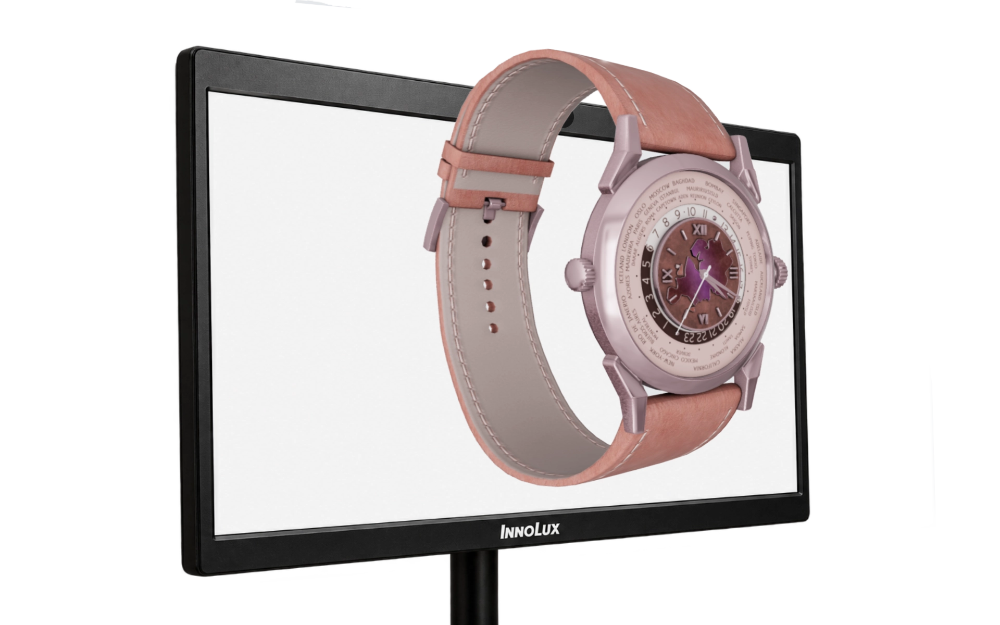
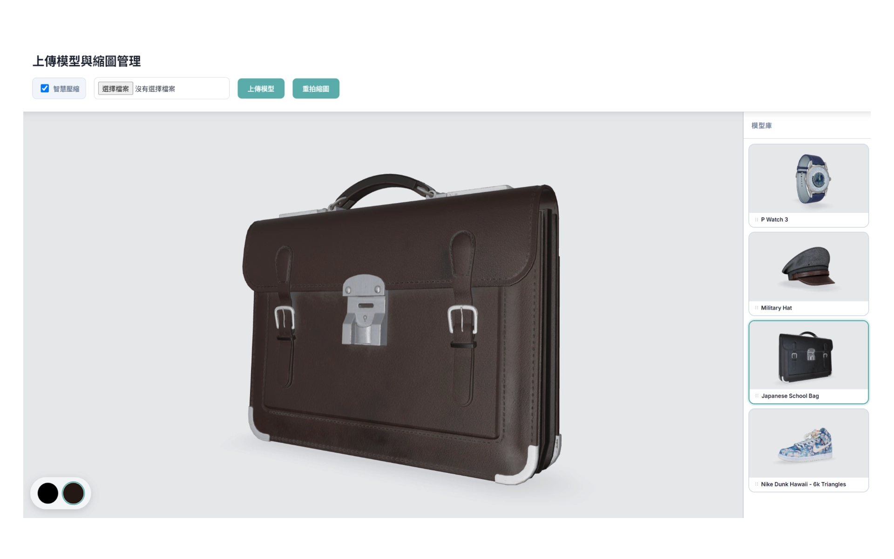
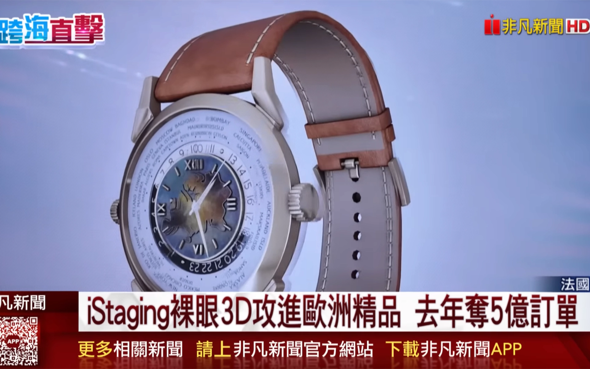

單人追眼式裸視 3D
以追眼立體顯示與手機操作，讓觀眾自主探索展品。
精品展示需要讓觀眾看見造型比例與細節，但固定影片限制了自主觀看，若使用眼鏡也增加準備步驟。本案以單人追眼呈現立體視差，讓觀眾免戴眼鏡即可從自己的位置觀看；再以手機掃碼連線，支援旋轉、縮放、換色與切換展品，讓觀眾依興趣查看局部細節，將探索節奏交還給現場觀眾。

01 / ARCHITECTURE
雲端模型管線與即時視差渲染
貫穿雲端模型資產處理、桌面端追眼數據平滑，至網頁端動態光柵渲染的跨端流程：
後台建置於 GCP Node.js，支援模型上傳幾何網格自動輕量化、即時多視角縮圖運算與材質色票配置。
桌面端採樣 Eye Tracker 人眼 3D 空間座標，經濾波平滑後推播至網頁層。
前端依據動態視角偏置（Off-axis Projection）計算雙眼錐體，即時渲染柱狀透鏡多視圖光柵，呈現逼真凸出景深。

02 / IMPLEMENTATION
手機即時遙控與房間配對機制
觀眾無需安裝 App，手機掃描展台 QR Code 即可建立專屬房間連線，直覺遙控展品：
手機掃碼直接開啟 Web 操作端，以專屬 Room ID 配對展台，避免多機相互干擾與展場排隊門檻。
支援單指 360° 旋轉、雙指縮放平移與即時換色，透過全雙工 WebSocket 廣播，大螢幕即時同步響應。
設計斷線自動重連機制與前端模型快取架構，支援展會現場長時間、多端連線操作。

03 / OUTCOME
跨國精品展會落地與媒體直擊
系統於法國歐洲精品展會與台灣現場展示，將名錶與精品模型置於免配戴眼鏡的 3D 數位展櫃中。整合追眼定位、視差渲染、雲端模型管線與手機操作，讓觀眾可在現場自主觀看與探索；展出成果獲非凡電視台新聞專題跨海直擊報導。
